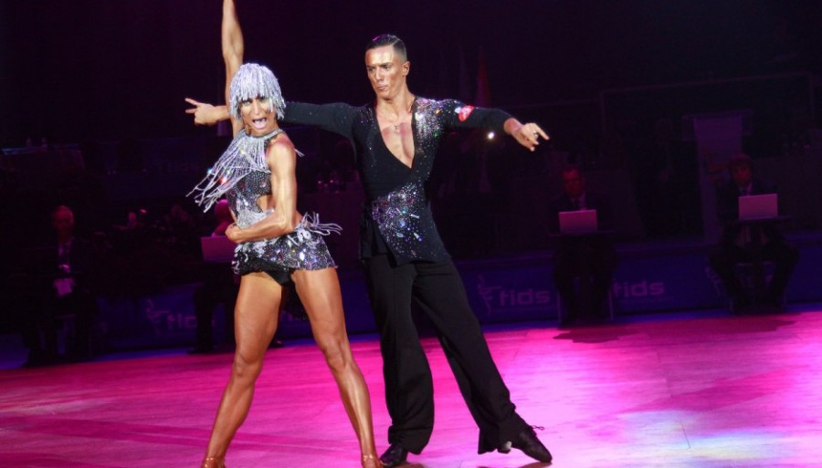

Origines de la danse sportive
La Danse sportive est un terme désignant un groupe spécifique de danses de couple ayant un aspect sportif prononcé. À l'origine, ce terme était appliqué à la danse de salon de compétition, dans son style international. Aujourd'hui, il englobe aussi notamment les styles américains de ces danses. Le terme officiel international pour les danses sportives est DanceSport.
Différentes catégories de danse
Latines :
- Samba
- Chacha
- Rumba
- Paso doble
- Jive

Standard :
- Valse anglaise
- Tango
- Valse viennoise
- Slowfox
- Quickstep